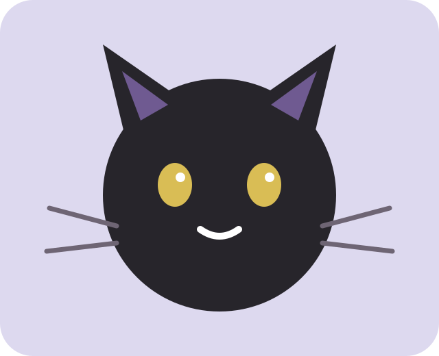

V1.3 · living cat café lab
Coffee.
Cats.
Choice.
A tiny digital café where humans order coffee, cats keep the house rules, and every design decision starts with welfare. Now with resident portraits, live-demo data, a room builder and a tiny Pune map.

Always.
🌿 quiet corners
01 / the residents
Eight tiny
characters.
Fictional residents are designed as welfare-first characters: each has preferences, activity rhythms and an interaction style. Click a cat to open its little file.
02 / the welfare lab
Five pillars.
One room.
Explore a playful interpretation of the five environmental-need pillars and test your ability to notice signals. Educational, not veterinary diagnosis or certification.
03 / live data layer
Pune, but
make it feline.
The prototype reads a structured JSON snapshot. Later this boundary can be replaced by an automated ingestion/API pipeline without redesigning the interface.
04 / café designer
Build a room
cats can leave.
Select features you would actually fund. The score is a playful heuristic for the prototype — not a certification or welfare assessment.

Add your first welfare feature.
05 / human training
Would you
notice?
Six tiny scenarios turn welfare guidance into decisions about space, interaction and choice.
WHY IT MATTERS
No gold stars. Just better humans.
06 / café pulse
A tiny map.
Real-world context.
Map cards are clearly marked as verified, public-listing or illustrative. The prototype never pretends a fictional venue is a real one.
TODAY AT WHISKER & BREW
PUNE CAFÉ MAP · PROTOTYPE
07 / community
Small choices.
Big purrs.
Join the fictional Whisker & Brew community for new resident stories, welfare explainers and future café experiments.
Demo only — this form does not send or store email anywhere.
08 / source-aware
Build with
receipts.
The project separates fictional UI content from real-world references and keeps links visible for verification.